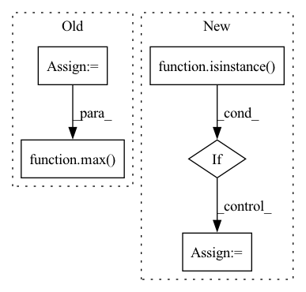

Pattern ID :31742
Before Change
df_train (pd.DataFrame): training data
df_val (pd.DataFrame): validation data
n_samples = len(df) - n_lags + 2 - (2 * n_forecasts)
n_samples = n_samples if inputs_overbleed else n_samples - n_lags
if 0.0 < valid_p < 1.0:
n_valid = max( 1, int(n_samples * valid_p))
else:
assert valid_p >= 1
assert type(valid_p) == int
n_valid = valid_pAfter Change
df_train (pd.DataFrame or list of pd.Dataframe): training data
df_val (pd.DataFrame or list of pd.Dataframe): validation data
if isinstance( df, list) :
df_list = df.copy()
df_train_list = list()
df_val_list = list()
if local_modeling:
for df in df_list:
df_train, df_val = single_split_df(df, n_lags, n_forecasts, valid_p, inputs_overbleed)
df_train_list.append(df_train)
df_val_list.append(df_val)
df_train, df_val = df_train_list, df_val_listIn pattern: SUPERPATTERN
Frequency: 3
Non-data size: 5
Instances Fragment ID: 92697110
Project Name: ourownstory/neural_prophet
Commit Name: d07b79568ef37904de81ba00248764233fbaa8c8
Time: 2021-10-07
Author: ourownstory@users.noreply.github.com
File Name: neuralprophet/df_utils.py
M Class Name: AnonimousClass
N Class Name: AnonimousClass
M Method Name: split_df(6)
N Method Name: split_df(5)
M Parent Class:
N Parent Class:
M File Name: neuralprophet/df_utils.py
N File Name: neuralprophet/df_utils.py
M Start Line: 297
M End Line: 312
N Start Line: 506
N End Line: 539
Before Change
return True
return False
sample_len = 0
sample_lens = []
for idx in indices:
sample_lens.append(num_tokens_fn(idx))
sample_len = max( sample_len, sample_lens[-1])
assert sample_len <= max_tokens, (
"sentence at index {} of size {} exceeds max_tokens "
"limit of {}!".format(idx, sample_len, max_tokens)
)After Change
max_sentences = max_sentences if max_sentences is not None else sys.maxsize
bsz_mult = required_batch_size_multiple
if isinstance( indices, types.GeneratorType) :
indices = np.fromiter(indices, dtype=np.int64, count=-1)
return batch_by_size_fast(indices, num_tokens_fn, max_tokens, max_sentences, bsz_mult)
Fragment ID: 92697148
Project Name: kssteven418/i-bert
Commit Name: 4fc39538aec5141aa41f5d6d7dc0097e7c0f7b48
Time: 2019-08-23
Author: namangoyal@learnfair0356.h2.fair
File Name: fairseq/data/data_utils.py
M Class Name: AnonimousClass
N Class Name: AnonimousClass
M Method Name: batch_by_size(5)
N Method Name: batch_by_size(5)
M Parent Class:
N Parent Class:
M File Name: fairseq/data/data_utils.py
N File Name: fairseq/data/data_utils.py
M Start Line: 199
M End Line: 239
N Start Line: 203
N End Line: 209
Before Change
model = create_model(model_name, pretrained=False)
model.eval()
input_size = _get_input_size(model=model, target=TARGET_FWD_SIZE)
if max( input_size) > MAX_FWD_SIZE:
pytest.skip("Fixed input size model > limit.")
train_nodes, eval_nodes = get_graph_node_names(After Change
model = torch.jit.script(_create_fx_model(model))
outputs = tuple(model(torch.randn((batch_size, *input_size))).values())
if isinstance( outputs, tuple) :
outputs = torch.cat(outputs)
assert outputs.shape[0] == batch_size
assert not torch.isnan(outputs).any(), "Output included NaNs" Fragment ID: 92697099
Project Name: feng-lab/pytorch-image-models
Commit Name: 9b3519545d6bf901047dccd24832793c95919cd4
Time: 2021-11-19
Author: rwightman@gmail.com
File Name: tests/test_models.py
M Class Name: AnonimousClass
N Class Name: AnonimousClass
M Method Name: test_model_forward_fx_torchscript(2)
N Method Name: test_model_forward_fx_torchscript(2)
M Parent Class:
N Parent Class:
M File Name: tests/test_models.py
N File Name: tests/test_models.py
M Start Line: 433
M End Line: 444
N Start Line: 424
N End Line: 429